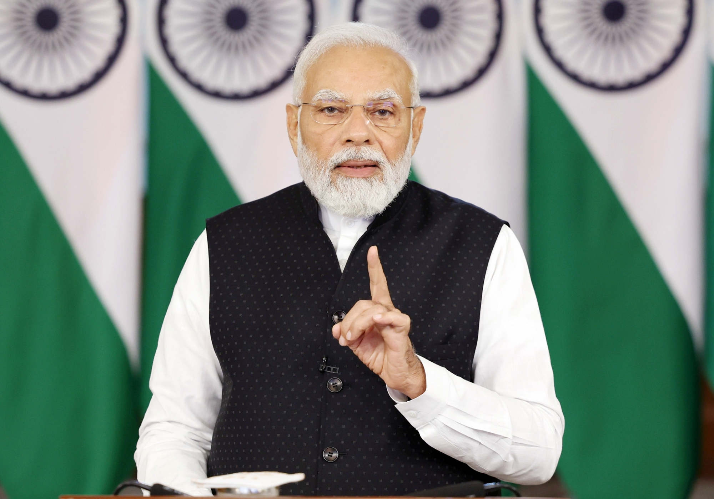
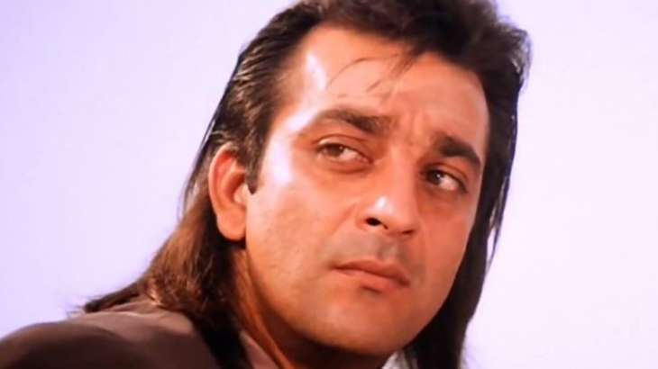

1] POLITICAL NEWS
The Trump Indictment and America’s Political Order
Although the US founders conferred on Congress the power – and the duty – to hold presidents accountable for unlawful behavior,structural changes have effectively shifted that function to federal law enforcement. With the indictment of a former president, we will now see whether this arrangement can prevent a constitutional crisis.

Every sector has witnessed swift advancement, setting the stage for a developed India: PM
15 Jun, 2023
The Prime Minister, Shri Narendra Modi has shared articles, graphics, videos and information about various growth and development initiatives that have shaped India’s unparalleled infrastructure landscape.
The Prime Minister tweeted :
“In #9YearsOfGatiAndPragati, we nurtured the roots of growth and development in India, shaping an infrastructure landscape that is unparalleled. Every sector has witnessed swift advancement, setting the stage for a developed India.”
In #9YearsOfGatiAndPragati, we nurtured the roots of growth and development in India, shaping an infrastructure landscape that is unparalleled. Every sector has witnessed swift advancement, setting the stage for a developed India.
— Narendra Modi (@narendramodi) June 15, 2023
2] TECH NEWS
How a a Rural Community
in Armenia Built Their Own Internet
A groundbreaking summit to help close the global digital divide is taking place this June. It’s the first in-person session since 2019, when it inspired transformation in a rural community in Armenia.
In the mountainous village of Shaghap, in the Armenian region of Ararat, over 170 families live in a quiet area far from urban centers.
Agriculture and husbandry have long been their main source of income, with other activities complementing it: a tobacco factory, a small pastry shop,
.and a bed and breakfast for tourists who are eager to venture into the Armenian mountains. But the lack of new opportunities has led to the exodus of Shaghap’s youth to the capital city of Yerevan and other larger cities, where they can find other jobs and create better opportunities for their future.
3] BUSINESS
India clears deal to buy armed Predator drones from US, announcement likely during PM Modi's visit
The deal is likely to be announced during Prime Minister Narendra Modi's US visit from June 21 to 24. India and the US are likely to announce the $1.8 billion deal for 18 Predator-B armed drones.
15 Jun, 2023
Defence Minister Rajnath Singh-led Defence Acquisition Council (DAC) has approved the deal for acquiring Predator drones from the United States, India Today reported on Thursday. The acquisition proposal will now have to be cleared by the Cabinet Committee on Security, sources told India Today. The deal is likely to be announced during Prime Minister Narendra Modi's US visit from June 21 to 24. India and the US are likely to announce the $1.8 billion deal for 18 Predator-B armed drones.
Made by General Atomics, Predator drones have been one of the most successful weapon systems for taking on terrorist groups such as the Taliban and ISIS.
4] MEDICAL

A common diabetes drug could lower long COVID risk by 40%
Researchers evaluated whether a common
diabetes medication, metformin, can prevent long COVID.
They found that metformin can reduce long COVID
diagnoses by 40%.
Further studies are needed to know if these findings
apply to the general population.
Long COVID is characterized by ongoing health problems that occur after a COVID-19 diagnosis, and which cannot be explained by other factors.
Symptoms can last for weeks, months, or years. More than 200 symptomsTrusted Source have been identified for long COVID, ranging from fatigue and nausea to memory loss, abdominal pain, and dyspnoea or difficulty breathing.
Several hypotheses for what causes long COVID have been suggested. However, mechanistic studies are at an early stage. Methods for treating or preventing the condition are also early in development.
5] ENTERTAINMENT
Sanjay Dutt’s Khalnayak clocks 30 years; actor shares BTS from the film

Actor Sanjay Dutt penned down a thankful note for the legendary director Subhash Ghai as his film ‘Khalnayak’ turned 30, on Thursday.
Taking to Instagram, Sanjay shared a collage video which he captioned, “I want to congratulate Subhashji one of the greatest directors of the Indian screen, Jackie Dada for being the perfect Ram and Madhuri for being Ganga, and the entire cast and crew of #Khalnayak, I am grateful and proud to be a part of such an iconic film and cherish every moment of it. 30 years and yet it looks like a film made yesterday, thank you Subhashji and Mukta Arts for making this film and me being a part of it, thank you once again. And thank you to all the fans whose love has made Khalnayak a classic. #30YearsOfKhalnayak.”